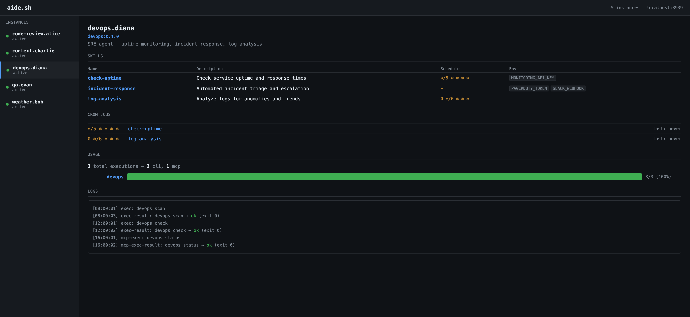

aide.sh
Deploy AI agents, just like Docker.
aide.sh is a CLI tool for packaging, deploying, and managing AI agents. One Rust binary, no runtime dependencies.
Why aide.sh?
- Docker mental model —
build,run,exec,push,pull. If you know Docker, you know aide.sh. - Works without AI — agents are structured skill runners (shell scripts). No LLM required.
- Three execution modes — ad-hoc (human drives), sub-agent (LLM drives via MCP), standalone (
-pflag: agent has its own LLM brain). - Local-first — agents run on your machine, secrets stay in your encrypted vault.
- MCP native — Claude Code, Codex, Gemini can control your agents as subagents.
Quick taste
# install
curl -fsSL https://aide.sh/install | bash
# pull an agent from the hub
aide pull aide/github-reviewer
aide run aide/github-reviewer --name reviewer
# use it — no AI needed
aide exec reviewer pr list
aide exec reviewer diff
# or let AI decide what to call
aide exec -p reviewer "are there any PRs that need review?"
# monitor everything
aide dash
What does -p do? It gives the agent a brain. Without -p, you call skills directly by name. With -p, an LLM (Claude CLI or local ollama) reads the agent’s persona and skill list, interprets your natural language query, and decides which skills to invoke.
Dashboard

Built-in observability. See every agent’s skills, cron jobs, usage analytics, and logs — all in one place.
How it works
Agentfile.toml ← agent manifest (like Dockerfile)
├── persona.md ← agent personality
├── skills/*.sh ← executable capabilities (shell scripts)
├── seed/ ← initial knowledge
└── [limits] ← timeout, token budget, retry policy
aide build agent/ → .tar.gz archive
aide push agent/ → upload to hub
aide pull user/agent → download from hub
aide run user/agent → create instance
aide exec inst skill → run a skill
aide up → daemon: cron + dashboard
Next steps
- Installation — get the binary
- Quick Start — build your first agent in 5 minutes
- Concepts — images, instances, skills, vault
- Execution Modes — ad-hoc, sub-agent, standalone
Installation
aide.sh ships as a single static binary. No runtime dependencies.
One-line install (recommended)
curl -fsSL https://aide.sh/install | bash
This detects your OS and architecture, downloads the latest release, and places the binary at ~/.local/bin/aide.
Cargo install
If you have a Rust toolchain:
cargo install aide
Build from source
git clone https://github.com/AIDEdotsh/aide.git
cd aide
cargo build --release
cp target/release/aide ~/.local/bin/
Verify
$ aide --version
aide 0.1.0
Make sure ~/.local/bin is in your PATH:
export PATH="$HOME/.local/bin:$PATH"
Shell alias (optional)
For convenience, alias the binary to aide.sh:
echo 'alias aide.sh="aide"' >> ~/.bashrc
source ~/.bashrc
Next
Once installed, proceed to the Quick Start.
Quick Start
Build and run your first agent in under 5 minutes.
1. Scaffold a new agent
$ aide.sh init school
Created school/
Agentfile.toml
persona.md
skills/
hello.sh
2. Edit the Agentfile
Open school/Agentfile.toml. The template looks like this:
[agent]
name = "school"
version = "0.1.0"
description = "My first agent"
author = "you"
[persona]
file = "persona.md"
[skills.hello]
script = "skills/hello.sh"
description = "Say hello"
usage = "hello [name]"
[seed]
dir = "seed/"
[env]
required = []
optional = []
Add a skill, change the description, or leave the defaults – it works out of the box.
3. Build the image
$ aide.sh build school/
Building school v0.1.0 ...
Image: school:0.1.0 (sha256:a3f8...)
This packages the Agentfile, persona, skills, and seed data into a compressed image stored in ~/.aide/images/.
4. Run an instance
$ aide.sh run school --name school
Instance "school" started (id: school)
5. Execute a skill
$ aide.sh exec school hello
Hello, world!
$ aide.sh exec school hello Alice
Hello, Alice!
6. List available skills
$ aide.sh exec school
Available skills:
hello Say hello
7. Open the dashboard
$ aide.sh dash
Dashboard running at http://localhost:3939
The dashboard shows all running instances, recent logs, and skill status.
What’s next?
- Concepts — understand images, instances, vault, and semantic injection
- Agentfile.toml reference — full configuration guide
- Skills — writing script and prompt skills
Concepts
Core ideas behind aide.sh, mapped to Docker equivalents where applicable.
Images vs Instances
| Docker | aide.sh | Description |
|---|---|---|
| Image | Image | Immutable snapshot built from Agentfile.toml |
| Container | Instance | Running copy of an image with its own state |
| Dockerfile | Agentfile.toml | Declarative manifest |
| docker build | aide.sh build | Package into image |
| docker run | aide.sh run | Create instance from image |
| docker exec | aide.sh exec | Run a command inside instance |
Images live in ~/.aide/images/. Instances live in ~/.aide/instances/.
Agentfile.toml
The manifest that defines an agent. Contains:
- [agent] — name, version, description, author
- [persona] — pointer to a markdown file describing the agent’s identity
- [skills.NAME] — executable capabilities (scripts or prompts)
- [seed] — static data bundled into the image
- [env] — required and optional environment variables
- [soul] — LLM routing preferences
Skills
A skill is a named capability. Two types:
- Script-based — a shell script (
skills/hello.sh) that receives args via$1,$2, etc. - Prompt-based — a markdown file (
skills/summarize.md) interpreted by an LLM at runtime.
Skills are invoked with aide.sh exec <instance> <skill> [args...].
Persona
A markdown file that describes who the agent is. Used by LLMs when the agent runs in semantic mode. Has no effect in explicit (non-LLM) mode.
Vault
Encrypted secret storage. Secrets are injected as environment variables at skill execution time. Three-tier scoping:
- Per-skill env — highest priority, set in
[skills.NAME] env - Per-agent env — set in
[env] - Vault — global secrets, lowest priority
See Vault & Secrets for details.
Semantic injection (the -p flag)
By default, aide.sh exec runs skills explicitly – you name the skill and pass args.
Add -p and the input becomes a natural language prompt routed through an LLM:
# explicit: you pick the skill and args
aide.sh exec bot notifications
# semantic: LLM picks the skill and args
aide.sh exec -p bot "do I have new mail?"
The agent itself is unchanged. The -p flag wraps it with an LLM reasoning layer. Without -p, no LLM is involved – the human acts as the reasoning layer.
MCP (Model Context Protocol)
MCP lets LLM hosts (Claude Code, Cursor, etc.) call aide.sh agents as tools. Running aide.sh setup-mcp registers your agents so that an LLM can:
- List available agents and skills
- Execute skills and read output
- Access logs
See MCP Integration for setup instructions.
Agentfile.toml Reference
The Agentfile is the manifest that defines an agent. It is always named Agentfile.toml and lives at the root of the agent directory.
Complete example
[agent]
name = "github-reviewer"
version = "0.1.0"
description = "GitHub PR reviewer — diffs, notifications, code review"
author = "demo"
[persona]
file = "persona.md"
[skills.pr]
script = "skills/pr.sh"
description = "GitHub PR management (list, review, approve, merge)"
usage = "pr [list|review|approve|merge|summary|diff]"
schedule = "0 8 * * *"
env = ["GITHUB_TOKEN"]
[skills.notifications]
script = "skills/notifications.sh"
description = "GitHub notifications triage"
usage = "notifications [check|unread|read N|search Q]"
schedule = "0 */4 * * *"
env = ["GITHUB_TOKEN"]
[skills.chrome]
script = "skills/chrome.sh"
description = "Chrome browser automation"
usage = "chrome [open|screenshot|scrape URL]"
[seed]
dir = "seed/"
[env]
required = ["GITHUB_TOKEN"]
optional = []
[soul]
prefer = "claude-sonnet"
min_params = 1
Sections
[agent]
| Field | Required | Description |
|---|---|---|
| name | yes | Agent name (lowercase, alphanumeric, hyphens) |
| version | yes | Semver string |
| description | yes | One-line summary |
| author | no | Author name or handle |
[persona]
| Field | Required | Description |
|---|---|---|
| file | yes | Path to a markdown file describing the agent’s identity |
The persona file is used by LLMs in semantic mode (-p). It has no effect in explicit mode.
[skills.NAME]
Each skill is a TOML table under [skills].
| Field | Required | Description |
|---|---|---|
| script | yes* | Path to shell script (mutually exclusive with prompt) |
| prompt | yes* | Path to prompt markdown file (mutually exclusive with script) |
| description | no | Shown in aide.sh exec <instance> skill list and --help |
| usage | no | Usage string for --help |
| schedule | no | Cron expression for periodic execution |
| env | no | List of env var names this skill needs |
[seed]
| Field | Required | Description |
|---|---|---|
| dir | yes | Directory of static files bundled into the image |
Seed data is copied into the instance at aide.sh run time. Useful for config files, templates, or reference data.
[env]
| Field | Required | Description |
|---|---|---|
| required | no | Env vars that must be present; aide.sh run will fail without them |
| optional | no | Env vars that are used if available |
[soul]
Controls LLM behavior when the agent runs in semantic mode.
| Field | Required | Description |
|---|---|---|
| prefer | no | Preferred LLM model identifier |
| min_params | no | Minimum parameters before falling back to LLM reasoning |
Validation
Run aide.sh lint <dir> to check an Agentfile for errors before building:
$ aide.sh lint school/
Agentfile.toml: OK
Skills: 3 found, all scripts exist
Env: GITHUB_TOKEN required
Skills
A skill is a named, executable capability of an agent. Skills are the primary unit of work in aide.sh.
Script-based skills
The most common type. A skill backed by a shell script:
[skills.hello]
script = "skills/hello.sh"
description = "Greet someone"
usage = "hello [name]"
The script receives positional arguments via $1, $2, etc:
#!/usr/bin/env bash
# skills/hello.sh
NAME="${1:-world}"
echo "Hello, $NAME!"
$ aide.sh exec bot hello Alice
Hello, Alice!
Prompt-based skills
A skill backed by a markdown prompt file, interpreted by an LLM at runtime:
[skills.summarize]
prompt = "skills/summarize.md"
description = "Summarize text using an LLM"
usage = "summarize <text>"
<!-- skills/summarize.md -->
Summarize the following text in 3 bullet points:
{{input}}
Prompt skills always require an LLM. They are skipped if no LLM is configured.
Execution model
When aide.sh exec <instance> <skill> [args] runs:
- The instance working directory is set to the instance root (
~/.aide/instances/<name>/) - Environment variables are injected in order: vault -> agent env -> skill env
- The script runs as a subprocess with the scoped environment
- stdout/stderr are captured and returned to the caller
- Exit code is preserved (0 = success)
Adding description and usage
The description and usage fields appear when listing skills:
$ aide.sh exec bot
Available skills:
pr GitHub PR management (list, review, approve, merge)
Usage: pr [list|review|approve|merge|summary|diff]
notifications GitHub notifications triage
Usage: notifications [check|unread|read N|search Q]
chrome Chrome browser automation
Usage: chrome [open|screenshot|scrape URL]
Example: skill with argument parsing
#!/usr/bin/env bash
# skills/pr.sh
set -euo pipefail
CMD="${1:-help}"
case "$CMD" in
list)
curl -s -H "Authorization: Bearer $GITHUB_TOKEN" \
"https://api.github.com/repos/${2}/pulls" | jq '.[].title'
;;
diff)
curl -s -H "Authorization: Bearer $GITHUB_TOKEN" \
"https://api.github.com/repos/${2}/pulls/${3}" | jq '.[]'
;;
*)
echo "Usage: pr [list REPO|diff REPO PR_NUM|review|approve|merge|summary]"
exit 1
;;
esac
Scheduled skills
Add a schedule field with a cron expression to run a skill periodically:
[skills.pr]
script = "skills/pr.sh"
schedule = "0 8 * * *" # daily at 8 AM
Scheduled skills require the daemon (aide.sh up). See Cron & Scheduling.
Vault & Secrets
The vault is aide.sh’s encrypted secret store. Secrets are injected as environment variables at skill execution time.
Import from .env file
$ aide.sh vault import .env
Imported 5 secrets from .env
The .env file uses standard KEY=VALUE format:
NTU_COOL_TOKEN=abc123
SMTP_USER=user@example.com
SMTP_PASS=hunter2
Set individual secrets
$ aide.sh vault set NTU_COOL_TOKEN=abc123
Set NTU_COOL_TOKEN
$ aide.sh vault set SMTP_USER=user@example.com SMTP_PASS=hunter2
Set SMTP_USER
Set SMTP_PASS
Check vault status
$ aide.sh vault status
Vault: ~/.aide/vault.db (encrypted, AES-256-GCM)
Secrets: 5 stored
NTU_COOL_TOKEN set 2025-06-01
SMTP_USER set 2025-06-01
SMTP_PASS set 2025-06-01
POP3_USER set 2025-06-01
POP3_PASS set 2025-06-01
Rotate encryption key
$ aide.sh vault rotate
Vault key rotated. All secrets re-encrypted.
Three-tier environment scoping
When a skill runs, environment variables are resolved in this order (highest priority first):
- Per-skill env — variables listed in
[skills.NAME] env - Per-agent env — variables listed in
[env] requiredandoptional - Vault — global secrets available to all agents
If the same key exists at multiple levels, the highest-priority value wins.
# Agentfile.toml
[skills.notifications]
script = "skills/notifications.sh"
env = ["GITHUB_TOKEN"] # skill-level: checked first
[env]
required = ["GITHUB_TOKEN"] # agent-level: checked second
optional = ["SLACK_WEBHOOK"] # vault: checked last
Credential leak scanning
aide.sh scans skill output for potential secret leaks:
$ aide.sh exec bot notifications
[warn] Potential secret detected in output (GITHUB_TOKEN pattern). Use --allow-leak to suppress.
This is a best-effort check. Always review scripts that handle sensitive data.
Security notes
- The vault database is stored at
~/.aide/vault.db - Encryption uses AES-256-GCM with a key derived from your system keychain
- Secrets are never written to disk in plaintext
aide.sh vault exportis intentionally not supported
Cron & Scheduling
Run skills on a schedule using cron expressions.
Defining schedules in Agentfile.toml
Add a schedule field to any skill:
[skills.pr]
script = "skills/pr.sh"
description = "GitHub PR scanning"
schedule = "0 8 * * *" # daily at 8:00 AM
[skills.notifications]
script = "skills/notifications.sh"
description = "GitHub notifications triage"
schedule = "0 */4 * * *" # every 4 hours
The schedule uses standard 5-field cron syntax:
minute hour day-of-month month day-of-week
0 8 * * *
Managing schedules at runtime
List scheduled jobs
$ aide.sh cron ls
INSTANCE SKILL SCHEDULE NEXT RUN
reviewer pr 0 8 * * * 2025-06-15 08:00
reviewer notifications 0 */4 * * * 2025-06-15 12:00
Add a schedule
$ aide.sh cron add reviewer pr "30 9 * * 1-5"
Schedule set: reviewer/pr at 30 9 * * 1-5 (weekdays at 9:30 AM)
Remove a schedule
$ aide.sh cron rm reviewer pr
Schedule removed: reviewer/pr
Daemon mode
Scheduled jobs only run when the daemon is active:
$ aide.sh up
Daemon started (PID 12345)
Dashboard: http://localhost:3939
Cron scheduler: active (2 jobs)
Without the daemon, schedules defined in Agentfile.toml are stored but not executed.
To stop the daemon:
$ aide.sh down
Daemon stopped.
Viewing cron status in the dashboard
The dashboard at http://localhost:3939 shows a cron panel with:
- All scheduled jobs across all instances
- Next scheduled run time
- Last execution result (exit code, duration, truncated output)
- Execution history (last 10 runs per job)
Cron output and logs
Cron job output is captured in the instance log:
$ aide.sh logs reviewer --filter cron
[2025-06-14 08:00:01] cron/pr: 3 open PRs, 2 need review
[2025-06-14 12:00:01] cron/notifications: 5 unread notifications
Failed jobs (non-zero exit code) are flagged in the dashboard and logs.
MCP Integration
MCP (Model Context Protocol) lets LLM hosts like Claude Code, Cursor, and Gemini call aide.sh agents as tools. Your agents become subagents that any LLM can orchestrate.
What is MCP?
MCP is a standard protocol for LLMs to discover and invoke external tools. aide.sh implements an MCP server that exposes your running agents as tools.
Auto-configure for Claude Code
$ aide.sh setup-mcp
Detected: Claude Code
Wrote MCP config to ~/.claude/settings.json
Registered tools: aide_list, aide_exec, aide_logs
This adds aide.sh as an MCP server in your Claude Code configuration.
Manual setup
Add the following to your Claude Code settings.json or equivalent MCP config:
{
"mcpServers": {
"aide": {
"command": "aide",
"args": ["mcp-serve"]
}
}
}
For Cursor, add to .cursor/mcp.json:
{
"mcpServers": {
"aide": {
"command": "aide",
"args": ["mcp-serve"]
}
}
}
Available MCP tools
Once configured, the LLM host sees these tools:
| Tool | Description |
|---|---|
aide_list | List all running instances and their skills |
aide_exec | Execute a skill on a running instance |
aide_logs | Retrieve recent logs for an instance |
Example: Claude Code calling an agent
After setup, Claude Code can use your agents directly:
User: "Check if I have any PRs to review"
Claude: I'll check your GitHub PRs.
[calling aide_exec: instance="reviewer", skill="pr", args=["list"]]
You have 2 PRs awaiting review:
- Fix auth middleware: PR #42 by alice
- Add pagination: PR #58 by bob
The LLM discovers available skills via aide_list, picks the right one, and calls aide_exec.
Running the MCP server manually
$ aide mcp-serve
MCP server listening on stdio
This is what setup-mcp configures to run automatically. You rarely need to invoke it directly.
Debugging
Check that instances are running:
$ aide.sh ps
NAME IMAGE STATUS
reviewer github-reviewer:0.1.0 running
Test a skill works before expecting MCP to use it:
$ aide.sh exec reviewer pr list
If the skill works via exec but not via MCP, check the MCP server logs:
$ aide.sh logs --mcp
Dashboard
aide.sh includes a built-in web dashboard for monitoring agents.
Quick start
aide.sh dash # standalone dashboard
aide.sh up # daemon + cron + dashboard
aide.sh up --no-dash # daemon without dashboard
Dashboard serves at http://localhost:3939.
Panels
- Instances — sidebar listing all agents with status dots (green = active)
- Skills — table with name, description, cron schedule, env vars
- Cron Jobs — schedule, skill name, last run time
- Usage — per-skill execution bars with success/fail ratio, CLI vs MCP breakdown
- Logs — real-time log tail with auto-refresh (3s polling)
API
# List all instances
curl http://localhost:3939/api/instances
# Instance detail (skills, cron, metadata)
curl http://localhost:3939/api/instance/reviewer.demo
# Logs (latest N lines)
curl http://localhost:3939/api/logs/reviewer.demo?tail=50
# Usage analytics
curl http://localhost:3939/api/stats/reviewer.demo
Stats response
{
"total_execs": 12,
"by_skill": {
"pr": { "count": 9, "success": 9, "fail": 0 },
"notifications": { "count": 1, "success": 1, "fail": 0 }
},
"by_source": { "cli": 12, "mcp": 0 }
}
Expose (Email / PWA)
Give your agents an address so anyone can talk to them — no terminal required.
Overview
| Channel | Address | Status |
|---|---|---|
agent+user@aide.sh | Planned | |
| PWA | app.aide.sh/instance | Planned |
Both channels are platform-controlled — aide.sh manages the infra, not third-party APIs.
Email Gateway (planned)
Every agent gets an email address:
reviewer+demo@aide.sh
How it works
- Anyone sends an email to
reviewer+demo@aide.sh - Cloudflare Email Worker receives the message
- Routes to agent:
aide.sh exec -p reviewer.demo "<email body>" - Agent runs matching skills
- Reply sent back via Resend/SMTP
Why email
- Zero install — everyone already has an email client
- Mobile native — works in any phone’s mail app
- We control it — aide.sh domain, our routing, no third-party bot limits
PWA (planned)
A chat interface at app.aide.sh:
app.aide.sh/reviewer.demo → chat UI → WebSocket → aide.sh exec
Features
- Real-time chat with your agents
- Works on iOS, Android, Desktop (Add to Home Screen)
- Push notifications via Service Worker
- No App Store required
Self-hosted integrations
Power users can integrate their agents with any messaging platform using
the MCP server or direct aide.sh exec calls:
# Your own Telegram bot
your-telegram-bot → aide.sh exec -p reviewer.demo "message"
# Your own Discord bot
your-discord-bot → aide.sh exec -p reviewer.demo "message"
# Any webhook
curl -X POST your-server/agent -d "message" → aide.sh exec
The MCP server (aide.sh mcp) is the recommended integration point for
LLM-based callers. For simple message-in/message-out, shell out to aide.sh exec.
aide.sh run
Create and start an agent instance from an image.
Usage
aide.sh run <IMAGE> [--name NAME] [-d]
IMAGE can be:
- A local agent type defined in
aide.toml(e.g.reviewer) - A registry reference in
<user>/<type>format (e.g.aide/github-reviewer)
Options
| Flag | Description |
|---|---|
--name NAME | Set instance name (default: <type>.<user>) |
-d, --detach | Run in background (default for agents) |
Examples
aide.sh run reviewer # local type from aide.toml
aide.sh run aide/github-reviewer # pull from registry, then run
aide.sh run aide/github-reviewer --name reviewer
What happens
- Resolves the image: local
aide.tomldefinition or registry pull (<user>/<type>format). - Derives instance name. Default is
<type>.<USER>where$USERcomes from the environment. - Creates the instance directory under
~/.aide/instances/<name>/with subdirectoriesmemory/andlogs/. - Copies
persona.mdfrom the agent type if one exists. - Writes
instance.tomlmanifest (name, type, email, role, domains, cron entries, creation timestamp). - Sets up cron schedules declared in the Agentfile.
Instance directory layout
~/.aide/instances/<name>/
instance.toml # manifest
persona.md # copied from agent type
Agentfile.toml # agent package spec
skills/ # executable skill scripts
seed/ # read-only knowledge files
memory/ # writable state
logs/ # daily log files
Errors
- If the instance name already exists, the command fails with a message suggesting
aide rm <name>first. - If the image is a registry reference that has not been pulled, it is pulled automatically.
aide.sh exec
Execute a skill on a running agent instance.
Usage
aide.sh exec [FLAGS] <INSTANCE> [SKILL] [ARGS...]
When called without a skill, lists all available skills for the instance (equivalent to --help).
Options
| Flag | Description |
|---|---|
-i, --interactive | Interactive mode (allocate pseudo-TTY) |
-t, --tty | Allocate pseudo-TTY |
Examples
aide.sh exec reviewer.demo # list available skills
aide.sh exec reviewer.demo pr list # run the "pr" skill with arg "list"
aide.sh exec reviewer.demo notifications # check notifications
aide.sh exec -it reviewer.demo diff # interactive mode
Skill resolution
- Looks up the instance under
~/.aide/instances/<instance>/. - Loads
Agentfile.tomlfrom the instance directory. - Finds the skill definition and locates the script at
skills/<skill>.sh. - Executes the script via
bash, passing remaining arguments.
Environment scoping
Secrets from the vault (~/.aide/vault.age) are injected with a tiered scoping model:
- Per-skill env – If the skill declares its own
envlist in the Agentfile, only those variables are injected. - Per-agent env – Otherwise, variables from the
[env]section (required+optional) are injected. - No Agentfile – Legacy mode: all vault variables are injected.
Smart error messages
If you pass a registry-style image reference (e.g. aide/github-reviewer) instead of an instance name, the command suggests running aide.sh pull and aide.sh run first.
Help output
Running aide.sh exec <instance> with no skill prints:
- Instance name, agent type, and version
- Each skill with its usage string and description
- Per-skill env var requirements
- A hint about semantic mode (
aide.sh exec -p <instance> "<query>")
aide.sh build / push / pull
Build, publish, and fetch agent images.
aide.sh build
Build an agent image from an Agentfile.
aide.sh build [PATH] [-t TAG]
| Flag | Description |
|---|---|
PATH | Directory containing Agentfile.toml (default: .) |
-t, --tag TAG | Tag the image (name:version) |
Build process
- Parse – Loads and parses
Agentfile.toml. - Validate – Checks that all referenced files exist (persona, skill scripts, prompt files, seed directory).
- Lint – Runs the full lint suite including credential leak scanning.
- Collect – Gathers all files:
Agentfile.toml, persona, skill scripts/prompts, and seed directory contents. - Archive – Creates
<name>-<version>.tar.gz. - Checksum – Computes SHA-256 of the archive.
Example
aide.sh build agents/reviewer/
aide.sh build . -t github-reviewer:0.2.0
aide.sh push
Push a built agent image to the registry.
aide.sh push [IMAGE]
| Flag | Description |
|---|---|
IMAGE | Directory or image name to push (default: .) |
Push process
- Builds the image (same as
aide.sh build). - Reads registry credentials from the vault (
AIDE_REGISTRY_TOKEN). - Uploads the
.tar.gzarchive tohub.aide.sh.
Requires prior authentication via aide.sh login.
aide.sh pull
Download an agent image from the registry.
aide.sh pull <USER>/<TYPE>[:VERSION]
Pull process
- Resolves the image reference. Version defaults to
latest. - Downloads the archive from
hub.aide.sh. - Extracts to
~/.aide/types/<user>/<type>/.
Example
aide.sh pull aide/github-reviewer
aide.sh pull aide/github-reviewer:0.1.0
Related commands
aide.sh images– List locally available agent images.aide.sh search <query>– Search the registry.aide.sh login– Authenticate with the registry.
aide.sh init / lint
Scaffold and validate agent projects.
aide.sh init
Generate a new agent project skeleton.
aide.sh init <NAME>
Creates a directory <NAME>/ with:
<NAME>/
Agentfile.toml # pre-filled manifest with TODO placeholders
persona.md # starter persona template
skills/hello.sh # sample executable skill script
seed/.gitkeep # empty seed directory
The generated Agentfile.toml includes a complete example with [agent], [persona], [skills.hello], [seed], and [env] sections. The hello skill is already executable (chmod 755).
Example
aide.sh init my-agent
cd my-agent
aide.sh lint # validate the scaffold
aide.sh exec . hello # run the sample skill
Fails if the directory already exists.
aide.sh lint
Validate an Agentfile.toml and its referenced files.
aide.sh lint [PATH]
PATH defaults to the current directory.
Checks performed
Errors (block build/push):
| # | Check |
|---|---|
| 1 | Agentfile.toml parses as valid TOML |
| 2 | agent.name is non-empty |
| 3 | agent.version is non-empty |
| 4 | agent.description is present and not a TODO placeholder |
| 5 | agent.author is present and not a TODO placeholder |
| 6 | Each skill has either script or prompt, not both, not neither |
| 7 | Referenced script files exist |
| 8 | Script files are executable (chmod +x) |
| 9 | Referenced prompt files exist |
| 10 | Cron schedule expressions are valid (5-field format) |
| 11 | No credential leaks detected (scans for sk-ant-, sk-proj-, AKIA, ghp_, gho_, eyJhbG, -----BEGIN) |
Warnings (informational):
| # | Check |
|---|---|
| 12 | Skill missing description |
| 13 | Skill missing usage |
| 14 | Seed directory declared but not found |
| 15 | Skills reference env vars but no [env] section exists |
| 16 | Per-skill env var not listed in [env].required or [env].optional |
Example output
$ aide.sh lint
[pass] Agentfile.toml parsed
[pass] agent.name = "github-reviewer"
[pass] agent.version = "0.1.0"
[pass] agent.description present
[pass] agent.author present
[pass] skills/pr.sh exists (executable)
[warn] skills.chrome: missing usage
[fail] skills/draft.sh: not executable
1 warning(s), 1 error(s)
aide.sh mcp / setup-mcp
MCP (Model Context Protocol) server for LLM tool integration.
aide.sh mcp
Start the MCP stdio server.
aide.sh mcp
Reads newline-delimited JSON-RPC 2.0 messages from stdin and writes responses to stdout. This is not meant to be called directly – it is invoked by an MCP-capable LLM client (e.g. Claude Code).
Protocol
- Transport: stdio (stdin/stdout), newline-delimited JSON
- Protocol version:
2024-11-05 - Server info:
aide.shv0.1.0
Tool schemas
aide_list – List all running agent instances and their available skills.
{
"name": "aide_list",
"inputSchema": { "type": "object", "properties": {} }
}
Returns instance names, types, status, email, and per-instance skill list with type (script/prompt) and description.
aide_exec – Execute a skill on an agent instance.
{
"name": "aide_exec",
"inputSchema": {
"type": "object",
"properties": {
"instance": { "type": "string" },
"skill": { "type": "string" },
"args": { "type": "string" }
},
"required": ["instance", "skill"]
}
}
Runs the skill script, applies env scoping from the vault, logs the invocation, and returns stdout/stderr.
aide_logs – Read recent logs from an agent instance.
{
"name": "aide_logs",
"inputSchema": {
"type": "object",
"properties": {
"instance": { "type": "string" },
"lines": { "type": "number" }
},
"required": ["instance"]
}
}
Returns the last N log lines (default 50).
aide.sh setup-mcp
Auto-configure MCP integration for a target client.
aide.sh setup-mcp [TARGET]
TARGET defaults to claude. Writes the MCP server configuration so that the client can discover and call aide.sh mcp automatically.
For Claude Code, this updates ~/.claude/claude_desktop_config.json (or equivalent) with the aide.sh MCP server entry.
aide.sh dash
Open the agent observability dashboard.
Usage
aide.sh dash [-p PORT]
Options
| Flag | Description |
|---|---|
-p, --port PORT | Port to serve on (default: 3939) |
Description
Starts a local HTTP server serving a web UI for monitoring agent instances. The dashboard provides a read-only view of instance status, skills, cron schedules, and logs.
Static assets are embedded in the binary via rust_embed.
API endpoints
| Method | Path | Description |
|---|---|---|
| GET | / | Dashboard web UI (index.html) |
| GET | /api/instances | List all instances with status, type, email, role, cron count, last activity |
| GET | /api/instance/{name} | Instance detail: metadata, version, description, author, skills, cron entries |
| GET | /api/logs/{name}?tail=N | Recent log lines for an instance (default tail: 100) |
Response examples
GET /api/instances
{
"instances": [
{
"name": "reviewer.demo",
"agent_type": "reviewer",
"status": "active",
"email": "reviewer@aide.sh",
"role": "GitHub PR reviewer",
"cron_count": 2,
"last_activity": "[08:00:01] diff completed"
}
]
}
GET /api/logs/reviewer.demo?tail=5
{
"logs": [
"[08:00:01] cron: diff",
"[08:00:03] diff completed",
"[12:00:01] cron: notifications",
"[12:00:05] notifications completed",
"[14:32:10] mcp-exec: pr list"
]
}
Integration with aide.sh up
When running aide.sh up, the dashboard is spawned as a background task within the daemon unless --no-dash is passed.
aide.sh up # starts daemon + dashboard on port 3939
aide.sh up --no-dash # starts daemon without dashboard
aide.sh mount / unmount
Inject agent context into LLM coding tools.
Usage
aide.sh mount <INSTANCE> <TARGET>
aide.sh unmount <INSTANCE> <TARGET>
TARGET is one of: claude, codex, gemini, all.
What gets injected
The mount command gathers content from the instance directory and writes it as a single markdown document:
- Instance metadata – agent type, email, role, cron schedules (from
instance.toml). - Persona – contents of
persona.md. - Seed knowledge – all
.mdfiles underseed/. - Memory – all
.mdfiles undermemory/.
Each section is separated by a horizontal rule. The file is marked with <!-- aide-mount --> so it can be cleanly removed on unmount.
Target: claude
Writes to ~/.claude/projects/<cwd-key>/memory/aide_<instance>.md.
The CWD is encoded as a path key (slashes replaced with dashes). If a MEMORY.md index file exists in that directory, an entry is appended under an ## Aide Agents section.
aide.sh mount reviewer.demo claude
# -> ~/.claude/projects/-Users-demo-projects-myapp/memory/aide_reviewer.demo.md
Target: codex
Writes to ./AGENTS.md in the current working directory.
If AGENTS.md already exists with non-aide content, the agent context is appended after a separator. On unmount, only the aide-marked section is removed.
Target: gemini
Writes to ./GEMINI.md in the current working directory.
Same append/remove behavior as the codex target.
Target: all
Mounts (or unmounts) to all three targets at once.
Examples
aide.sh mount reviewer.demo claude
aide.sh mount reviewer.demo all
aide.sh unmount reviewer.demo codex
aide.sh unmount reviewer.demo all
Unmount behavior
- claude: Deletes
aide_<instance>.mdand removes the index entry fromMEMORY.md. - codex: Removes the aide-marked section from
AGENTS.md. Deletes the file if no other content remains. - gemini: Same as codex, targeting
GEMINI.md.
Agent Hub
Pull, run, done.
aide.sh pull aide/devops
aide.sh run aide/devops --name mybot
aide.sh exec mybot check-uptime
Available Agents
| Name | Description | Source | License |
|---|---|---|---|
| aide/code-review | Plan, review, QA, ship | garrytan/gstack | MIT |
| aide/context | API docs for coding agents | andrewyng/context-hub | MIT |
| aide/devops | Uptime, incidents, log analysis | community | MIT |
| aide/ntu-student | University LMS + mail | yiidtw/aide | MIT |
| aide/weather | Forecast + severe alerts | community | MIT |
| aide/qa | Test, regression, coverage | community | MIT |
Publish Your Agent
aide.sh login # GitHub OAuth
aide.sh build my-agent/ # package
aide.sh push my-agent/ # publish to hub
Your agent will be available as your-username/agent-name.
Build Your Own
aide.sh init my-agent # scaffold
# edit Agentfile.toml + skills/
aide.sh lint my-agent/ # validate
aide.sh build my-agent/ # package
See Agentfile.toml reference for the full spec.
Architecture: The Soul Model
An aide.sh agent does not own its LLM. The caller brings the intelligence.
Core insight
In Docker, a container does not own the CPU. The host provides compute at runtime. aide.sh applies the same principle to AI agents: the agent defines skills, persona, and memory, but the LLM that powers reasoning is provided externally.
This means an agent can run in three modes without changing its definition:
Three caller modes
1. MCP mode (frontier)
An MCP-capable client (e.g. Claude Code) calls into the agent via aide.sh mcp. The LLM lives on the client side. The agent’s skills run as tools the LLM can invoke.
This is the highest-capability mode. The caller’s frontier model handles reasoning, planning, and natural language understanding. The agent provides domain-specific actions.
2. Terminal mode (no LLM)
A human runs aide.sh exec <instance> <skill> [args] directly. No LLM is involved. The skill script executes and returns output. The human is the intelligence layer.
This is the zero-dependency mode. Every agent works here, regardless of whether an LLM is available.
3. Daemon mode (local model)
The aide.sh up daemon runs scheduled tasks using a local model via Ollama. The [soul] section in Agentfile.toml declares preferences:
[soul]
prefer = "llama3.2:3b"
min_params = "1b"
prefer– the preferred local model identifier.min_params– minimum model size the agent needs.
The daemon selects the best available model that meets the requirement.
Docker analogy
| Docker | aide.sh |
|---|---|
| Container does not own CPU | Agent does not own LLM |
| Host provides compute | Caller provides intelligence |
| Works on any host with Docker | Works with any LLM (or none) |
| CPU is a runtime resource | LLM is a runtime resource |
Design consequence
Because the LLM is external, agent packages are small and deterministic. A skill is a bash script. A persona is a markdown file. There are no model weights, no inference servers, no GPU requirements in the agent image.
The same agent image that a frontier model orchestrates via MCP can also be operated by a human typing commands in a terminal.
Architecture: Agent Execution Modes
aide.sh agents have three execution modes. Same agent, same skills — different brains.
Three Modes
1. Ad-hoc (no LLM)
aide.sh exec school pr list
aide.sh exec school notifications
Human directly calls a skill by name. Script runs, output returns. No AI involved. This is like calling a Docker container’s command directly.
2. Sub-agent (caller’s LLM)
Claude Code / Codex / Gemini
└── MCP: aide_exec(school, pr, list)
A frontier CLI model controls the agent via MCP. The caller’s LLM decides what skills to invoke. The agent doesn’t need its own brain — the caller IS the brain.
3. Standalone (agent has its own LLM)
aide.sh exec -p school "what's due this week?"
The -p flag gives the agent a soul. The query is piped through an LLM
(claude -p or local ollama) which reads the persona, examines available skills,
and autonomously decides what to call.
human → LLM (claude -p / ollama) → selects skill → executes → LLM → human
How -p works
- Reads
persona.md— who the agent is - Reads skill catalog — what it can do (names, descriptions, usage)
- Composes a prompt: “Given these skills, answer this query”
- LLM selects skill + args
- aide.sh executes the skill
- LLM formats the output for the human
LLM Resolution Order
When -p is used, aide.sh looks for an LLM in this order:
claude -p— if Claude Code CLI is installedollama— if a local model is available[soul]section in Agentfile.toml — preferred model hint
[soul]
prefer = "llama3.2:3b"
Comparison
| Ad-hoc | Sub-agent | Standalone | |
|---|---|---|---|
| Who decides | Human | Caller’s LLM | Agent’s LLM |
| Trigger | aide.sh exec | MCP aide_exec | aide.sh exec -p |
| LLM needed | No | Caller has it | Yes (claude/ollama) |
| Offline | Yes | No | Depends on LLM |
| Use case | Scripts, cron, CI | Claude Code workflows | Chat, email, Telegram |
Why this matters
LLM is a runtime, not a dependency. An agent that works in ad-hoc mode will
always work — on any machine, offline, without API keys. The -p flag and MCP
are enhancements, not requirements.
This is the opposite of frameworks where the LLM is baked into the agent. In aide.sh, the agent is a set of capabilities. The LLM — whether frontier or local — is an optional brain that makes those capabilities accessible via natural language.
Architecture: Docker Comparison
aide.sh follows Docker’s conceptual model, applied to AI agents instead of application containers.
Command mapping
| Docker | aide.sh | Purpose |
|---|---|---|
Dockerfile | Agentfile.toml | Package definition |
docker build | aide.sh build | Create distributable image |
docker run | aide.sh run | Create and start an instance |
docker exec | aide.sh exec | Run a command inside an instance |
docker ps | aide.sh ps | List running instances |
docker stop | aide.sh stop | Stop an instance |
docker rm | aide.sh rm | Remove an instance |
docker logs | aide.sh logs | View instance logs |
docker inspect | aide.sh inspect | Detailed instance metadata |
docker push | aide.sh push | Upload image to registry |
docker pull | aide.sh pull | Download image from registry |
docker images | aide.sh images | List local images |
docker search | aide.sh search | Search the registry |
docker login | aide.sh login | Authenticate with registry |
| Docker Hub | hub.aide.sh | Public registry |
| Docker Desktop | aide.sh dash | GUI dashboard |
Concept mapping
| Docker concept | aide.sh equivalent | Notes |
|---|---|---|
| Image | Agent type | Immutable package: Agentfile + skills + persona + seed |
| Container | Instance | Running agent with its own memory and logs |
| Volumes | memory/ + seed/ | seed/ is read-only; memory/ is read-write |
| Secrets | Vault (~/.aide/vault.age) | Age-encrypted, scoped per-agent and per-skill |
| Entrypoint | Skills (script or prompt) | Each skill is an independent entry point |
| ENV | [env] section | Declares required/optional secrets |
| Registry | hub.aide.sh | Push/pull agent images |
| Compose | aide.toml | Multi-agent configuration |
| Daemon | aide.sh up | Background process for cron + dashboard |
| CPU/RAM | LLM | Runtime resource provided by caller, not owned by agent |
Key differences
Multiple entry points. A Docker container has one entrypoint. An aide.sh instance has many skills, each independently callable.
External compute. Docker containers own their process. aide.sh agents do not own their LLM – it is provided by the caller (MCP client, terminal user, or local Ollama).
Cross-tool mounting. Docker volumes mount filesystems. aide.sh mount injects agent context into LLM tools (Claude Code, Codex, Gemini) as markdown files.
Deterministic packages. Agent images contain only scripts and markdown. No model weights, no runtime binaries, no language-specific dependencies. A typical image is kilobytes, not gigabytes.
Lifecycle comparison
Docker: build -> push -> pull -> run -> exec -> stop -> rm
aide.sh: build -> push -> pull -> run -> exec -> stop -> rm
The lifecycle is intentionally identical. If you know Docker, you know aide.sh.
Architecture: Git-Native Agent Methodology
Every aide.sh agent is a git repo. Every interaction is a git operation.
The Repo IS the Agent
my-agent/
├── Agentfile.toml # manifest (like Dockerfile)
├── persona.md # personality + behavior rules
├── skills/*.sh # executable capabilities
├── memory/ # persistent memory (git tracked)
│ ├── context.md # current working context
│ ├── decisions.md # past decisions + reasoning
│ └── contacts.md # people/systems the agent knows
├── seed/ # initial knowledge
└── .github/
└── workflows/
└── agent.yml # webhook: issue → exec → comment
GitHub Issues = Agent Inbox
You open an issue: "check my grades this semester"
→ GitHub webhook fires
→ GitHub Action runs: aide exec school cool grades
→ Action comments: "Here are your grades: ..."
→ You get a notification
→ You reply: "also check if any assignments are due"
→ Webhook fires again
→ Agent responds in comments
No custom UI. No polling. No KV limits. GitHub IS the interface.
Why Git
| Concern | Git solution |
|---|---|
| Memory persistence | Files in repo, versioned |
| Memory sync across machines | git pull |
| Audit trail | git log |
| Collaboration | Pull requests |
| Rollback | git revert |
| Branching experiments | git branch |
| Access control | Repo permissions |
| Notifications | GitHub notifications + email |
| Mobile access | GitHub mobile app |
| API | GitHub REST/GraphQL API |
| CI/CD | GitHub Actions (free for public repos) |
| Migration | Move to GitLab/Gitea, same structure |
Three Interface Layers
Layer 1: CLI (local)
aide exec school cool courses # direct skill call
aide exec -p school "what's due?" # LLM-assisted
Layer 2: MCP (LLM-driven)
Claude Code → aide_exec(school, cool) # sub-agent mode
Layer 3: GitHub Issues (async, remote)
Open issue → webhook → exec → comment # event-driven
All three layers use the same agent, same skills, same memory. The interface changes, the agent doesn’t.
Memory is Just Files
No database. No KV store. No special API.
<!-- memory/context.md -->
# Current Context
- Semester: 2026 Spring
- Courses: 4 (ML, SoCV, VLSI, Seminar)
- Next deadline: ML HW3 (2026-03-25)
- Last scan: 2026-03-18 07:00
Agent writes to memory files. Git tracks changes. git log memory/ shows how the agent’s understanding evolved over time.
Webhook Handler Template
# .github/workflows/agent.yml
name: Agent
on:
issues:
types: [opened]
issue_comment:
types: [created]
concurrency:
group: agent-${{ github.event.issue.number }}
cancel-in-progress: false
jobs:
respond:
runs-on: ubuntu-latest
# Only respond to allowed users, never to bot's own comments
if: |
(github.event_name == 'issue_comment' &&
github.event.comment.user.login != 'github-actions[bot]' &&
contains(fromJSON('["owner-username"]'), github.event.comment.user.login)) ||
(github.event_name == 'issues' &&
contains(fromJSON('["owner-username"]'), github.event.issue.user.login))
steps:
- uses: actions/checkout@v4
- name: Install aide
run: |
VERSION="0.4.0"
curl -sL -o "$HOME/.local/bin/aide" \
"https://github.com/yiidtw/aide/releases/download/v${VERSION}/aide-$(uname -m)-unknown-linux-gnu"
chmod +x "$HOME/.local/bin/aide"
- name: Run agent
env:
GITHUB_TOKEN: ${{ secrets.GITHUB_TOKEN }}
run: |
export PATH="$HOME/.local/bin:$PATH"
if [ "${{ github.event_name }}" = "issue_comment" ]; then
BODY="${{ github.event.comment.body }}"
else
BODY="${{ github.event.issue.body }}"
fi
ISSUE="${{ github.event.issue.number }}"
RESULT=$(aide exec -p agent "$BODY" 2>&1 || echo "Agent error")
gh issue comment "$ISSUE" --body "$RESULT"
- name: Commit memory changes
run: |
git config user.name "agent[bot]"
git config user.email "agent@aide.sh"
git pull --rebase || true
git add memory/ || true
git diff --cached --quiet || git commit -m "memory: updated by agent (issue #${{ github.event.issue.number }})"
git push || true
Security Considerations
- Access control: The
ifcondition restricts which users can trigger the agent. Replaceowner-usernamewith your GitHub username. Without this, anyone who can open issues triggers your agent. - Secrets: API keys go in GitHub repo Settings → Secrets, not in memory files. Memory files should never contain credentials.
- Self-trigger prevention: The bot check (
github-actions[bot]) prevents infinite comment loops. - Concurrency: The
concurrencygroup ensures only one run per issue at a time, preventing git push conflicts. - Version pinning: aide is installed from a pinned release version, not
curl | bash, to prevent supply-chain attacks. - Private repos: GitHub Actions free tier gives 2000 minutes/month for private repos. Public repos are unlimited.
- Memory encryption: For sensitive data, encrypt memory files before committing (e.g.,
ageencryption, same as aide vault).
No Vendor Lock-in
The entire system is portable:
- GitHub → GitLab: Change webhook URL, same workflow syntax
- GitHub → Gitea: Self-hosted, same git structure
- GitHub → bare git: Use git hooks instead of Actions
The agent definition (Agentfile + skills + memory) is platform-agnostic. Only the webhook handler changes.
Trade-offs
What git-native is good at
- Simplicity: no database, no server, no custom UI to maintain
- Portability: move to any git host, same structure
- Auditability: every agent action is a git commit
- Collaboration: PRs to review agent behavior changes
- Cost: free for public repos on GitHub
What git-native is NOT good at
- Latency: GitHub Actions cold-start is ~30-60 seconds. Not suitable for real-time chat.
- Structured queries:
git logis not a database. Complex queries over memory are hard. - Scale: thousands of concurrent issues would strain Actions runners.
- Always-on: agents wake on events, not continuously running. Use
aide updaemon for cron/polling.
When to use what
| Use case | Best approach |
|---|---|
| Async tasks (email triage, reports) | Git-native (issues) |
| Real-time chat | aide up daemon + Telegram/email |
| CI/CD automation | Git-native (PR events) |
| Monitoring + alerting | aide up daemon (cron) |
| Interactive development | CLI (aide exec) or MCP |
Comparison
| aide.sh (git-native) | Paperclip | OpenClaw | |
|---|---|---|---|
| Interface | GitHub Issues | Custom UI | Telegram/Slack |
| Memory | Git files | PostgreSQL | SQLite |
| Latency | ~30-60s (Actions) | Instant (server) | Instant (daemon) |
| Scale | Per-repo limits | Horizontal | Single machine |
| Orchestration | company.toml | Org charts + budgets | Single agent |
| Sync | git pull | DB replication | Manual |
| Migration | Change git remote | Re-deploy stack | Re-configure |
| Cost (public) | Free | Self-host infra | Self-host infra |
| Cost (private) | 2000 min/mo | Self-host infra | Self-host infra |
| Mobile | GitHub app | None built-in | Telegram app |